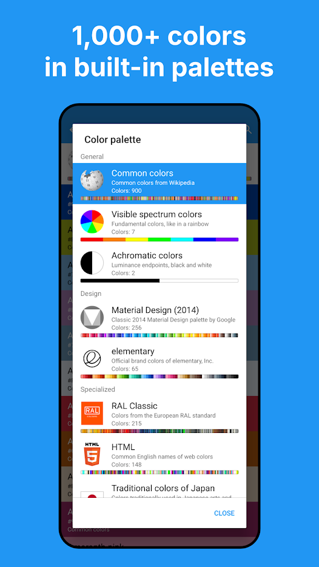

Color Picker：把一千多种标准色卡装进口袋的取色器
手机取色器大多停在「给你一个 HEX/RGB 就行」，Color Picker 往前多走了一大步——取完色还能在 RAL、Material Design、日本传统色等八张标准卡里对上号、报出名字和匹配度。本文聊清楚它在同类里的位置、差异化优势，以及什么样的人值得装。
手机取色器这个类目，长期停在一个很尴尬的状态：从摄像头或截图里点一下，吐一个 HEX 或 RGB 出来，就完事了。够用，但也仅此而已——你拿到一个 #AD6E33，然后呢？这个颜色在工业标准里叫什么号？在设计社区常用的色板里有没有对应的标准色？做文案时该怎么准确描述它？大多数取色应用在这一步就断了。
Color Picker 是少数把这件事接下去做的应用——它的官网副标直接写着「Find Name & Code」，定位就不是只给 HEX 值的小工具。它不只是一个像素探针，更像一个随身的色卡对表工具：取完颜色，自动在八张来源清晰的标准色卡里找最接近的那个，报出匹配度，还给它一个名字。这个思路在同类里确实少见，值得单独聊。
先看一眼：同类工具的版图
手机取色器大致分三档。最基础的一档就是前面说的「点一下吐值」，免费广告款居多，满足临时截图取色的刚需，功能天花板很低。第二档开始加了一些辅助功能，比如历史记录、多色值格式切换、简单的调色盘，但核心逻辑还是「取 → 给值」。第三档往上走，会尝试把取色和色彩体系挂钩——这一档产品极少，而且大多只做了一半：要么只有一套固定色板、要么没有色差匹配算法、要么只能手动在色板里翻。
Color Picker 站在第三档里，而且往前走得更远。它的差异化集中在三个点，这三点组合起来，就不是换个壳能抄出来的东西。
差异化一：取色之后自动对表
这是它最核心的卖点，也是和绝大多数同类拉开距离的地方。
应用内置了八张来源明确的色卡，合计一千多种颜色：Common colors 900 色、RAL Classic 215 色、Material Design 256 色、HTML 色名、日本传统色，还有 elementary OS 品牌色和光谱七色。每一张卡都标注了来源和用途，不是随便拼的色值合集。
取色时，应用会把你拿到的那个颜色（不管是从摄像头实时取还是从截图里点）和当前「活动色卡」做色差比对，直接报出卡里最接近的色号和匹配度百分比。比如你拍了一张衣服的照片，活动色卡切到 Common colors，它可能告诉你这是「97% Copper」；切到 RAL Classic，它又会报一个 RAL 编号和匹配度。一次取色，能同时在多套标准里各对一遍。
这个功能的价值，做设计、做涂装、做品牌色管理的人一眼就能懂。普通取色器给你的是一个孤立的色值，Color Picker 给你的是这个颜色在某个行业标准里的定位。刷漆对色时，RAL 编号比 RGB 数值有用得多；网页设计时，Material Design 色板里有没有对应色，直接决定了能不能进设计系统。

差异化二：色名不是附赠，是核心功能
很多人没意识到：「这颜色叫什么」和「这颜色是多少号」是两种不同的需求。Color Picker 把这件事做细了。
Common colors 那张 900 色的卡，取色时默认就是活动色卡——所以你第一次用它取色，读到的不是一串十六进制数，而是一个带匹配度的色名，比如「94% Brown sugar」。这个名字来自维基百科贡献者筛选的公认色名，不是应用开发者自己编的。日常交流、写文案、给孩子讲颜色，用名字比用色值顺畅太多。
更有意思的是日本传统色那张卡。它收录的不是色号，而是「胭脂」「露草」「琥珀」这种有文化出处的传统色名。做和风设计、文创产品、插画配色的人，切到这张卡取色，读数出来的就是一个能直接写进作品说明里的名字。
关键是，色名从来不是单独存在的。详情页里传统色照样配 HEX、RGB、CIELAB 全套数值，名字给人看，色值给机器用，两不耽误。这点很多同类应用做得很粗糙——要么只有色值没有名字，要么名字是自己瞎起的、和行业里的标准色名完全对不上。Color Picker 在这点上做得很规范，Color Picker文档里对每张色卡的来源和用途都有明确标注，不会让你对着一堆色值不知道从哪来。
差异化三：全套色值，直接对接设计软件
取色最终要落地到工具里，这点 Color Picker 也没偷懒。
颜色详情页的 Details 区块，HEX 和 RGB 各占一行，行尾直接有复制按钮，点一下入剪贴板。更省事的是可以在设置里打开「取色自动复制」，每次取完不用再进详情页点，直接去目标应用里粘贴就行。
HEX 和 RGB 是同一个颜色的两种写法，应用给的是完整六位（不像有些工具只给三位简写），大小写任意。除了这两个最常用的，还有 CIELAB 等专业色空间的读数，色差匹配度的计算就是基于这套色空间做的——匹配度低于某个阈值时，应用会老实告诉你「卡里没有这个色」，而不是硬塞一个低相似度的色名。
它为这些优势付出了什么
优势明显，但代价也摆在台面上，不绕弯子。
首先是平台限制。目前只有安卓版本，包名是 gmikhail.colorpicker，Google Play 2016 年上架，至今没有 iOS 版。iPhone 用户如果想试，只能换一台安卓设备，没有其他绕过的办法。这个是硬伤，不用解释。
其次是商业模式。免费下载、核心功能免费，但商店页面标注了含广告，还有内购解锁项（约 4.99 美元档位，用于去广告）。对重度用户来说，如果广告频率影响了取色效率，花这笔钱去广告是合理的，但轻度用户其实可以忍——核心功能没有被锁在付费墙后面。
还有一个小取舍：它的体积在 6 到 9MB 之间浮动，不算大，但权限要相机和存储。相机权限是相机取色必需的，拒绝了也只影响这一个功能，图片取色照常能用；存储权限是保存截图和色卡导出用的，按需申请。对权限敏感的用户可以选择性拒绝。
选购结论：什么样的人值得装
如果你属于以下任一人群，Color Picker 值得你装：
- 经常需要和标准色号打交道的设计师、美工——不管是 RAL 工业标准、Material Design 色板还是 HTML 色名，这一张应用里都有，取完直接对号
- 做文案、品牌色管理、对「颜色叫什么」有需求的人——色名系统是它独有的，同类很少能把这件事做细
- 和风设计、插画、文创领域的从业者——日本传统色那张卡不是花架子，色值和色名都靠谱
如果你的需求只是「从截图里取一个 HEX 值粘进 CSS」，那系统自带或更轻量的免费应用就够了，没必要在它上面花时间。它的价值在于把「取色」这个动作延伸到了「在标准体系里定位颜色」——不需要这一步的人，感知不到它的好。
最后说一句
我自己用下来的感受是，这类应用的差距不在界面漂不漂亮，而在「取完色之后还有没有下文」。Color Picker 给出了一套很完整的答案——色卡库、色差匹配、色名、多格式色值——而且每一层都做得够扎实。它是那种不声不响、但用久了你会发现离不开的工具。
想要的话可以装来试试，体验下来觉得好用的话继续用，觉得功能超出需求也不亏——免费版的基础取色功能本身就够用了。如果你想自己扒一下完整的色卡数据或者整理一份参考，这套资料在GitHub、Gitee、GitCode三个仓库都能找到，国内访问不方便时换一个就行。